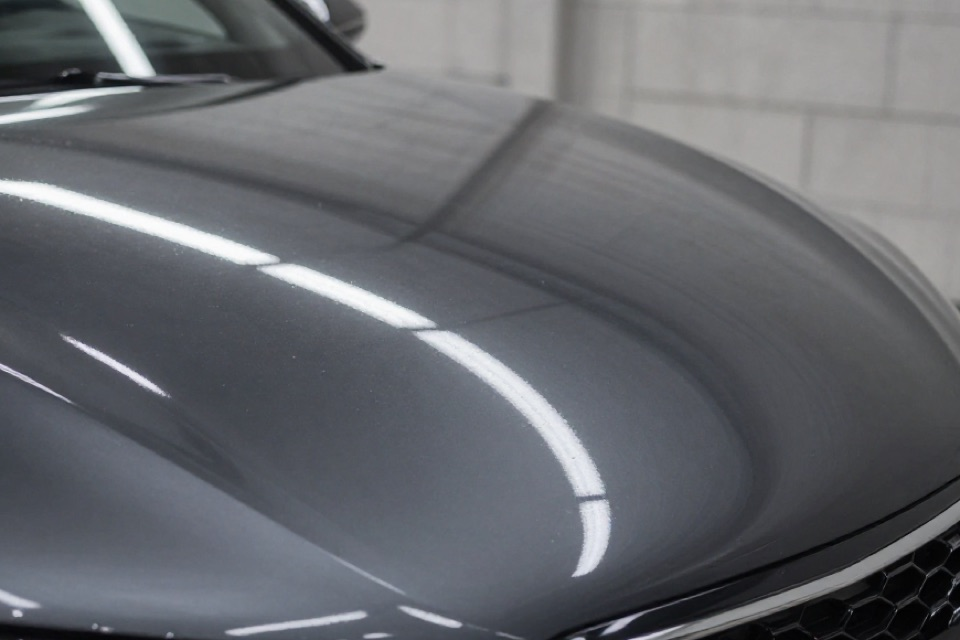
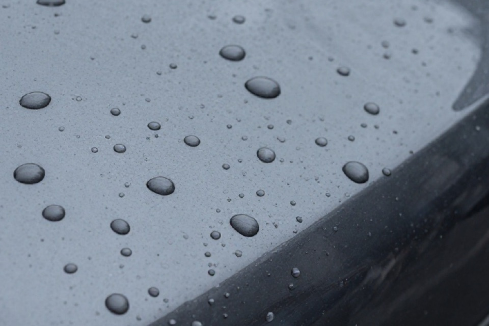
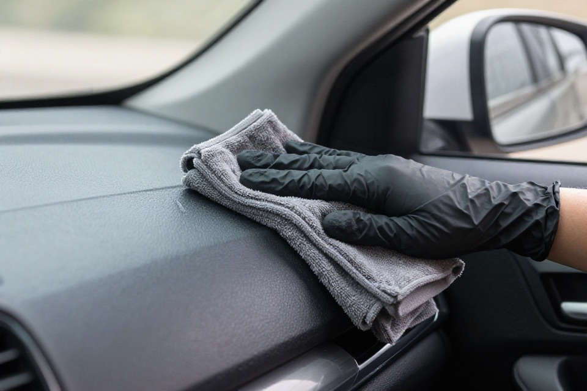

Aracınız, işiniz, başlangıç fiyatı
Fiyatlar KDV dahil başlangıç fiyatıdır. Büyüklüğe göre fiyatı burada görürsünüz; çizik ve eski film durumuna aracı görünce bakarız.
Aynı kaput, aynı ışık
Matlık, kurumuş su lekesi ve ince yıkama izleri boyayı soluk gösterir. Tek aşama pasta-cila bu yüzeysel izleri alır; derin çiziği aracı görünce söyleriz. Sürgüyü yana çekin.

 ÖnceSonra
ÖnceSonra
TEMSİLİ "Önce" hâli aynı fotoğraftan çizildi; sitede sizin aynı kadrajdan çektiğiniz iki fotoğraf yer alır.
Paketler ve başlangıç fiyatları
Hatchback ve sedan çoğu işte aynı fiyattır; SUV ve büyük araç ayrı yazılır. Detaylı işler randevuyla, yıkama sıraya göre yapılır.
Seramik kaplama
Şeffaf film (PPF)
Cila, iç temizlik, cam
Seramikte paket yılı, ürünün beklenen dayanım sınıfıdır; gerçek ömür kullanıma ve yıkamaya bağlıdır. Seramikten önce boya düzeltmesi gerekirse fiyatını işe başlamadan söyleriz.
Hangisi bana uygun?
Taş izi, çizik derdi
Şeffaf film fiziksel darbeyi üstlenir. Otoyolda çok yol yapan araçta önce ön seti düşünün.
Parlaklık, kolay yıkama
Seramik su ve kiri daha zor tutar, yıkamayı kolaylaştırır. Taşa karşı koruma değildir.
Matlık, ince yıkama izi
Önce pasta-cila. Kaplama, altındaki izi kapatmaz; üstünde parlatır.
Aracınızı nasıl alır, nasıl veririz
- Birlikte etrafında yürürüzVar olan çizik, göçük ve taş izlerini sizin yanınızda fotoğraflarız. Plaka fotoğrafa girmez.
- Kesin fiyatı yazılı veririzPaket, ne dahil ve teslim günü WhatsApp'ta yazılı durur.
- İş bitince birlikte bakarızGün ışığında ve atölye lambası altında panel panel bakarız; ilk gün çektiğimiz fotoğraflarla karşılaştırırız.
- Bakım notuSeramikten sonra ilk hafta yıkama yok; fırçalı otomatik yıkama ince çizik yapar, elle yıkama önerilir.
Garanti: iki ayrı şey
- Ürün (üretici) garantisi
- Seramik ya da film markasının verdiği belge. Yalnız belgesi olan ürün için yazılır; belgesi teslimde verilir.
- İşçilik güvencesi (işletme)
- Kabarma, kenar kalkması gibi uygulama kaynaklı sorunlarda ne yapılacağı ve süresi yazılı verilir.



Gelenler ne diyor
4,9212 Google yorumuÖRNEK
Seramik için gittim, önce kaputtaki halkaları gösterdi. Cilasız seramiğin onları kapatmayacağını söyledi, ikisini birlikte yaptık.
Fiyatı SUV için ayrı yazmışlar, gidince de aynısını söylediler.
Derin çizik için "bu cilayla çıkmaz" dedi, boşuna para harcatmadı.
Sorular
Burada olmayanı WhatsApp'tan sorun.
Kullanılan film ve seramik hangisi?
Ürünün markası ve türü (film için TPU olup olmadığı) teklifte yazılı verilir; kutusunu ve belgesini görebilirsiniz.
Ne kadar sürer, aynı gün alabilir miyim?
Seramik ve film birlikte olur mu?
Olur. Genelde önce film uygulanır, seramik filmin üstüne sürülür; usta aracı görünce sırayı ve süreyi yazar.
Cam filmi yasal mı?
Ön cama film uygulamıyoruz. Yan ve arka camlarda yasal sınıra uygun film kullanılır; güncel sınırı uygulamadan önce birlikte netleştiririz.
Aracı alıp getiriyor musunuz?
Hayır, aracı atölyeye siz getirirsiniz. Alıp getirme yapan işletmenin sitesinde semt listesi ve ücreti yazılır.
Küçükbakkalköy, Ataşehir
- Adres
- Örnek Sokak No: 5, Küçükbakkalköy, Ataşehir
Haritada yol tarifi al (demoda kapalı) - Saatler
- Pazartesi - Cumartesi, 09.00 - 19.00
- Telefon
- 0216 000 00 00
- Gelenler
- En çok Ataşehir, Kadıköy, Ümraniye ve Maltepe'den